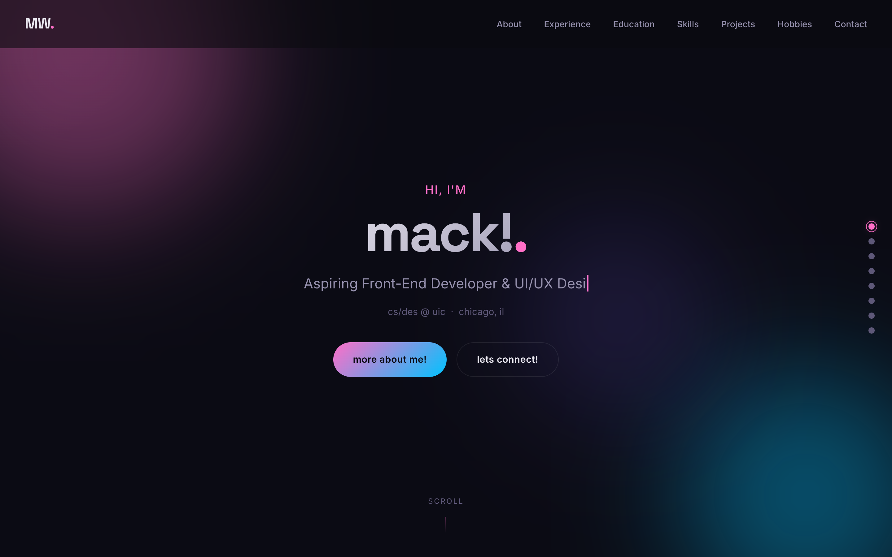
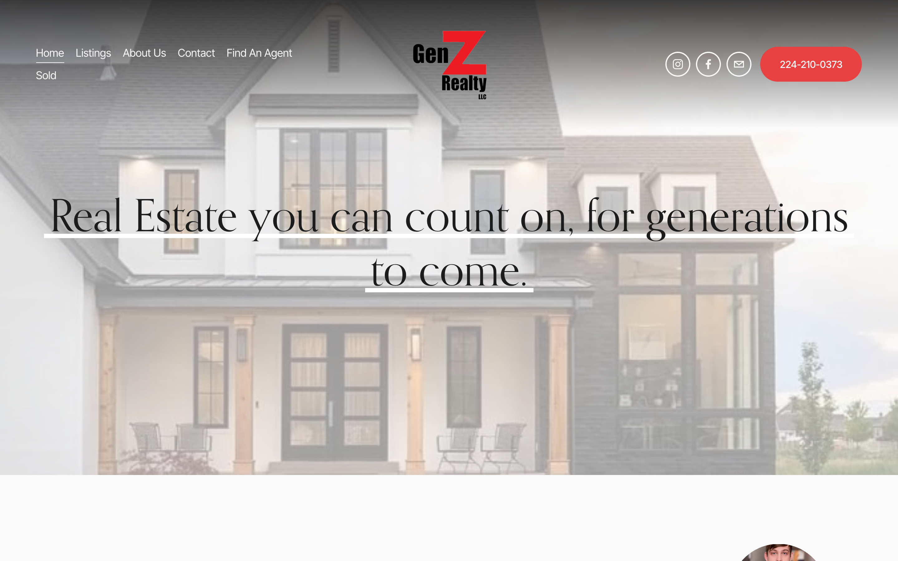
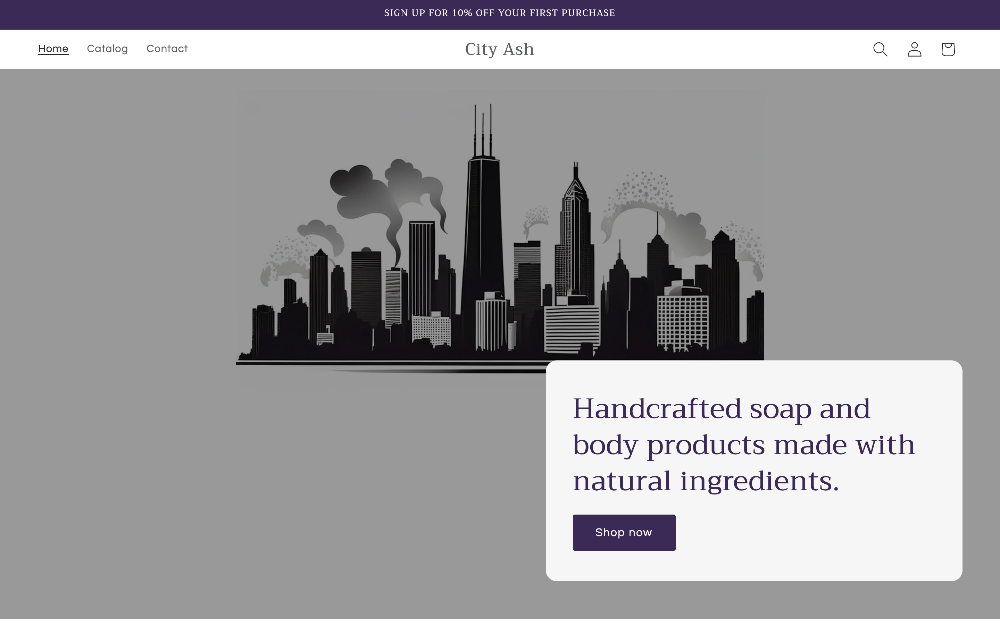
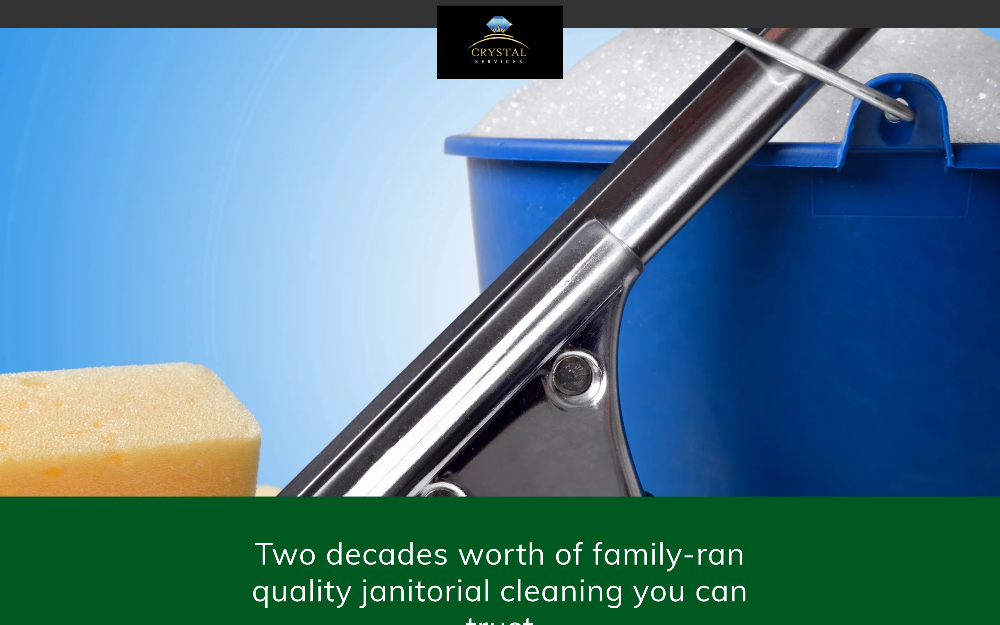
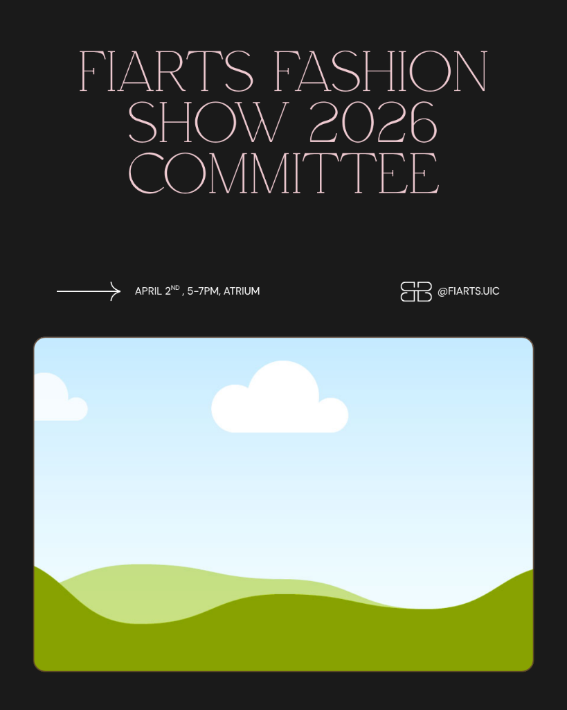
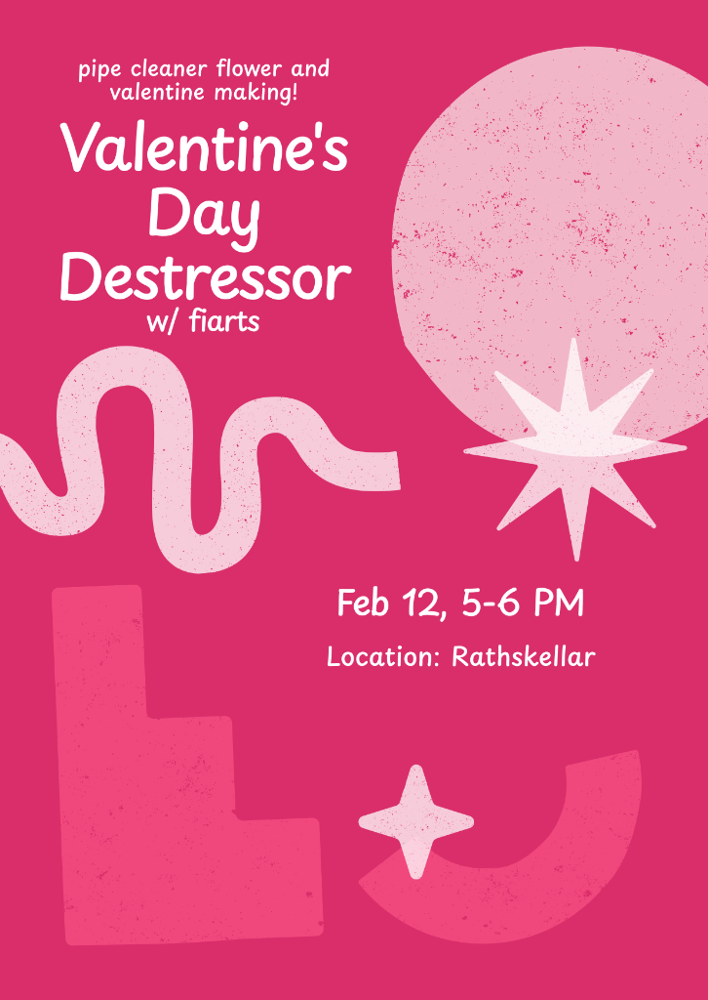

A portfolio showcasing website and landing page designs built for real businesses. Demonstrating proficiency across multiple platforms, creative design skills, and a passion for community and entrepreneurship.

Fully hand-coded from the ground up using HTML, CSS, and JavaScript. Designed, developed, and deployed independently to GitHub Pages.

Designed and built a professional real estate website for a brokerage targeting younger homebuyers. Focused on a trustworthy, modern brand identity.

Designed an e-commerce storefront for a handcrafted soap and candle brand. Built a clean aesthetic with a custom Chicago skyline illustration.

Designed a landing page for a family-run janitorial company. Built to convert leads with clear calls to action and a professional palette.
A custom application to log, track, and review live music events. Designed to provide personalized statistics and setlist integration for music enthusiasts.
Custom home automation setups integrating various IoT devices into a unified smart ecosystem. Focus on scripting, local networking, and seamless user experience.

Recruitment graphic for a student organization. Focus on elegant typography and clean visual hierarchy.

Vibrant event flyer for a social event. Utilized bold colors and engaging shapes to attract students.
Squarespace, Shopify, GoDaddy, WordPress, Webflow basics. Hand-coding with HTML/CSS and Javascript.
Figma, Canva, Adobe Creative Cloud (Premiere Pro, XD), UI/UX principles.
Independent project management, strong attention to detail, creative eye, and brand building.